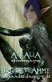

Athalia
Points : 0

Joué par :
La Famille Brilleflamme
Joué par :
[ Information masquée ]
Age : apparent selon les critères humains: 30 réel selon les dires de son épouse: 40000
Lieu de naisance : Inconnu
Sexe : Femme
Race : Elfe
Faction : Alliance
Formation : Prêtre
Artisanat 1 : Couturier
Artisanat 2 : Enchanteur
Informations hrp : Elfe de la nuit aux cheveux bleus, ayant une silhouette fine et gracieuse, un eternel sourire bienveillant aux lêvres, une étrange lueur d'or dans le regard.
Femme élégante, à la beauté quasi irréelle elle semble toujours aussi pâle qu'Elune.
Une voix cristalline et douce, semblant chanter constemment en marchant.
Une étrange sensation de bien être semble emplir quiconque reste un moment à ses cotés, comme si sa simple présence suffisait à apaiser ne serait ce que quelques secondes les douleurs et les mots du corps et du coeur.
De sa manière de se vétir, de se comporter, l'on peut percevoir une certaine noblesse.
Description : Originaire tout comme sa fille Terra de la mystérieuse ville de Hautebrume, dont elle semblait être une notable, Athalia vint sur les Terres du Kalimdor et des Royaumes de l'Est à la suite de sa fille Terra, envoyée sur place pour observer ce monde et la menace démoniaque, et de son épouse Celes d'Orléans dit "Temperance", se languissant de son épouse et de sa fille.
Comtesse adorée dans ses terres natales, cette Elfe étrange semble manier une étrange essence mystique mélant la foi en la Lumière à des litanies chantées louant les essences primordiales.
Mère protectrice et douce, épouse fidèle et prévenante, ceux ou celles qui ont la chance de gagner sa confiance, qu'elle ne semble donner que rarement derrière son sourire éclatant, auront la chance d'avoir à leur coté la plus solide et fidèles de compagnes.
Elfe érudite, douée pour manier le Langage de Lumière, ses talents d'oratrice et un étrange charisme semble l'avoir prédisposé par le passé à des postes de commandement ou de proche conseillers.
De son passé, Athalia ne dit que peu de choses.
Tout ce que l'on sait d'elle pour l'instant est que cette Elfe originale, aux caprices parfois la faisant ressembler aux grandes artistes cantatrices, chemine le Royaume de Stormwind régulièrement, chantant dans les auberges.
Et cette étrange faculté d'être toujours présente lorsque le mal rôde....
Véritable guérisseuse des âmes, certains indigents la remercient déjà de sa douceur.